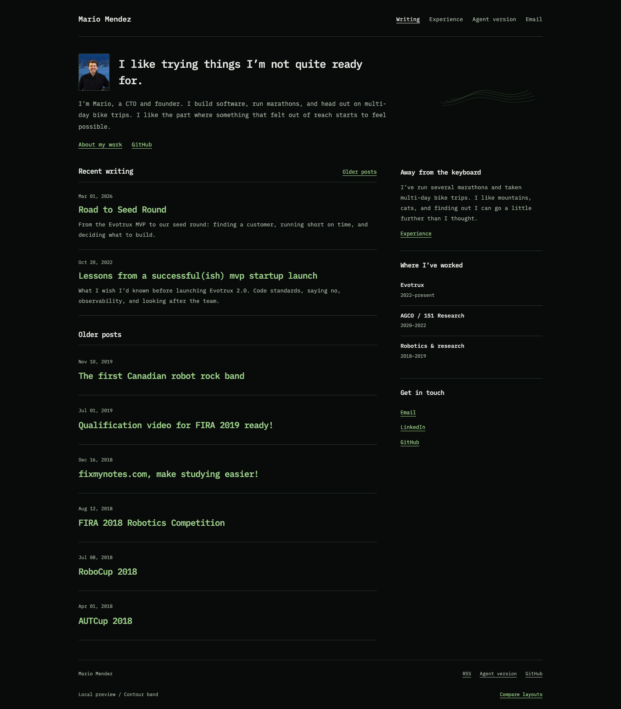
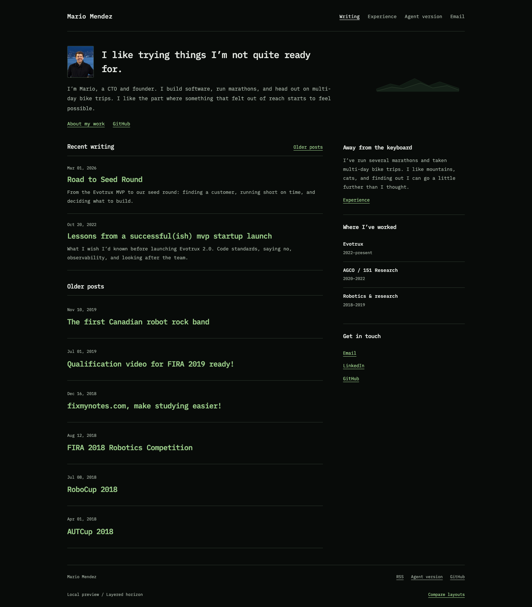

Thin ridgeline
Two fine lines, low against the horizon. The nearer line lifts a few pixels as you scroll; the distant one barely shifts. The lightest, most familiar mountain shape.
Open Thin ridgelineThree options on the layout you picked. Your photo, introduction, writing, and sidebar stay the same. Each mountain graphic is a shallow strip, with no dot, climber, stone, or route to follow.
Scroll a little in a full page or live preview. The motion happens over a short range while the graphic is still visible, then continues quietly in the floating header.
Two fine lines, low against the horizon. The nearer line lifts a few pixels as you scroll; the distant one barely shifts. The lightest, most familiar mountain shape.
Open Thin ridgeline
A few topographic curves instead of a mountain drawing. The two sets slide gently against one another. More abstract, and the least like a literal climbing scene.
Open Contour band
Two dark silhouettes with a fine edge. A small separation gives them depth without tracing a path. The quietest in color, with a little more visual weight than the outlines.
Open Layered horizonIt keeps the mountain recognizable without asking for much attention. Contour band is the choice if you want the idea to be more abstract; Layered horizon is softer and more atmospheric.
All three main graphics are about 52–56 pixels high. Their movement uses the first 48–96 pixels of scrolling while in view, rather than the whole page. The header mark appears when the strip passes behind the masthead. Reduced-motion settings keep everything static.
Local design previews. Original photo retained; public website unchanged.